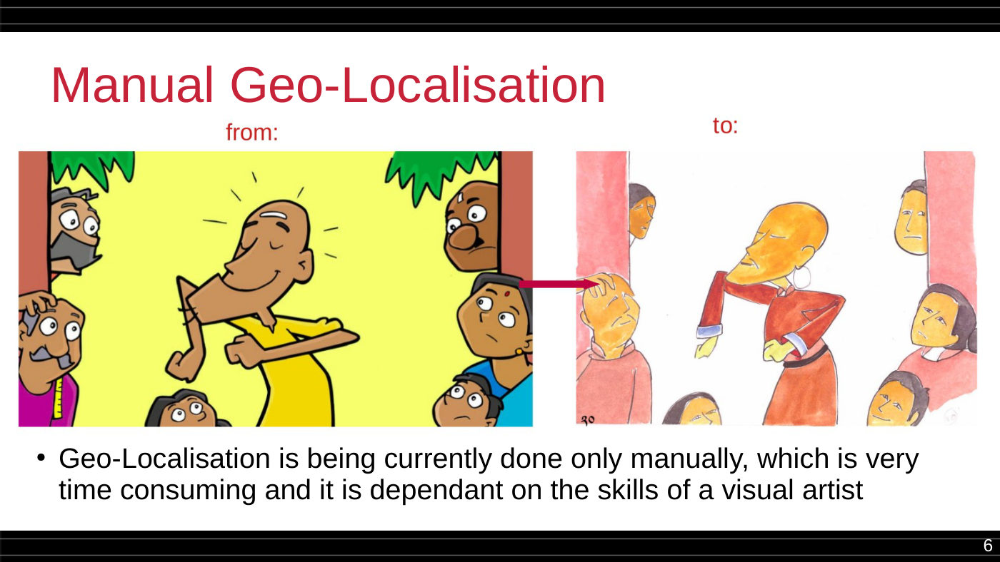
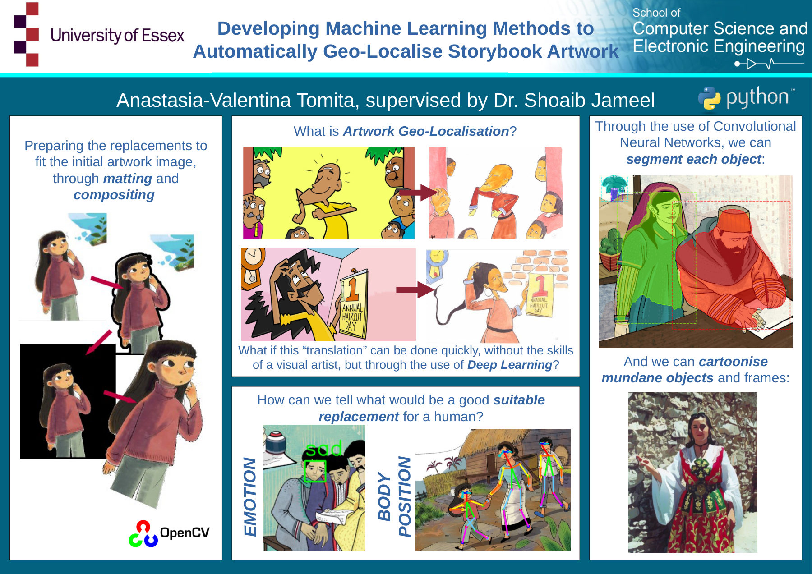
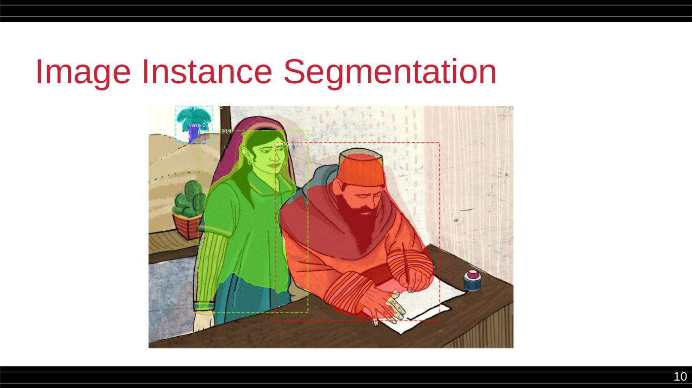
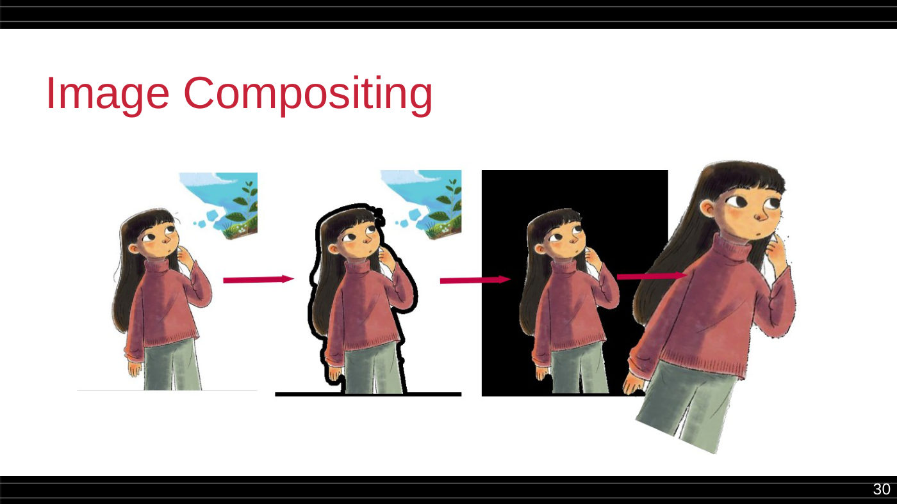
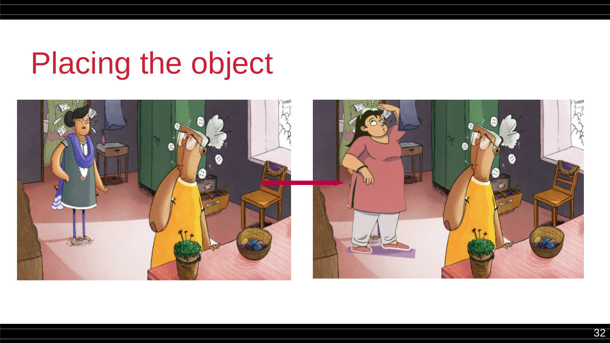
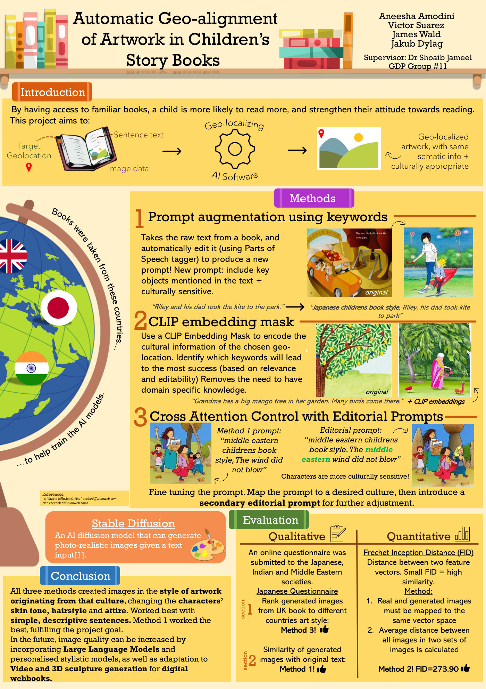

Cultural AI, Before It Had a Name.
Everyone is suddenly talking about culturally-aware LLMs. For almost six years — funded by NVIDIA and the Global Challenges Research Fund, built on StoryWeaver's open children's-book corpus — I've been working on exactly this problem: teaching AI to automatically re-imagine a children's book for a different culture. This page is the evidence, not just the story.
Last updated 29 July 2026A Child in India Doesn't Know Fish & Chips.
Neither does a child in Italy relate to a dosa. Reading-for-pleasure books are the "stepping stone" in a child's language development — but when a book's illustrations and references come from somewhere else entirely, the child can't picture their own world inside the story, and that gap makes the text itself harder to understand.
Publishers already know this — it's why books get manually adapted for different markets. But manual geo-localisation of illustrations needs a visual artist, takes real time, and simply doesn't scale to the world's languages. The question this whole research programme asks: can a machine do this automatically — swapping in age-, gender-, emotion- and pose-appropriate characters and objects from a different culture, while keeping the story's meaning intact?
Every prototype on this page — spanning computer vision, diffusion models and now large language models — is an attempt at answering that question a little better than the last one.

Manual geo-localisation, done by hand today — slow, and dependent entirely on a visual artist's skill.
The Funding Trail.
This wasn't a side project. It was backed, reviewed and funded three separate times before "cultural alignment" was a phrase anyone used about LLMs.
Multi-Modal Image Style Transfer
"Automatically Geo-Localising Reading Material Digital Artwork for Increased Reader Engagement" — the seed grant that started it all.
£36,500 · Jan–Jul 2021 · Principal InvestigatorCompute for Geo-localisation Research
"Automatic Geo-localization of Reading-for-Pleasure Children's Storybooks" — awarded a Quadro RTX6000 GPU to power the segmentation and generative models.
NVIDIA Quadro RTX6000 · Principal InvestigatorFrom Research to Policy
Proposal: "AI-modelled geo-localised and personalised reading-for-pleasure books in UK schools." Paired with a UK Home Office policymaker to advise on AI regulation and governance in education.
News coverage →Three Generations, One Question.
Computer vision, then diffusion, then language models — each generation is a real, supervised student project with a report, a poster, or a working repo to prove it.
Classical computer vision: segmentation, emotion and pose detection, compositing. No generative models — none existed yet in usable form.
Stable Diffusion and CLIP, built for real external customer Pratham Books — the organisation behind StoryWeaver.
BERT and RoBERTa probed directly for cultural entity alignment, benchmarked explicitly against naive ChatGPT prompting.
CALM: Culturally Self-Aware Language Models, NeurIPS 2025 — the same question, now asked of frontier LLMs.
Segmentation, Emotion, Pose — By Hand-Built Computer Vision
Anastasia-Valentina Tomita's individual capstone project at the University of Essex, "Developing Machine Learning Methods to Automatically Geo-Localise Storybook Artwork," is dated April 2022 — seven months before ChatGPT existed. There was no LLM to lean on; the entire pipeline is classical computer vision.
Each human figure in a StoryWeaver illustration is segmented, then matched against a replacement database using a weighted distance over emotion, age and gender — and finally matted and composited back into the original frame, resized and repositioned to fit.




Segmentation → matching → matting → compositing → placement.
Stable Diffusion — Built for StoryWeaver's Own Publisher
A four-person University of Southampton Group Design Project — Aneesha Amodini, Victor Suarez, James Wald and Jakub Dylag — took the same problem to Stable Diffusion. Their report's external customer of record: Pratham Books, the publisher behind StoryWeaver itself.
Real books were pulled directly from StoryWeaver — including "The Mango Tree" and "A Street, or a Zoo?" — and re-rendered in Japanese, Indian and Middle Eastern children's-book art styles. Evaluation combined Fréchet Inception Distance (FID) with an actual questionnaire sent to Japanese, Indian and Middle Eastern reviewers to rate cultural fit. Method 1 — simple keyword augmentation — won.

Probing BERT & RoBERTa for Cultural Alignment
Indrajeet Sen's MSc project, "Automatic Geo-Alignment of Artwork," went a step further: use language models themselves to identify which objects in a sentence are culturally swappable, and what they should become. The framing on the very first slide is the same one now driving frontier LLM research — an estimated 617 million children and adolescents worldwide falling short of minimum reading proficiency (UNESCO).
The project's own slides pose the obvious question directly — "why not just ask a chat-based LLM like ChatGPT to do this?" — and answer it with the same problem researchers still cite today: "response structure is not consistent, parsing would be difficult; lack of precise responses." The fix was to embed target-location data directly into the prompt architecture rather than hoping a chatbot would infer it — tested across India, China and Italy on food and clothing entities, sourced from Wikidata.
The Explainer, In Motion.
The short animated walkthrough produced alongside this research — the same "book store" framing used to pitch the idea to non-technical audiences.
From a Mango Tree to NeurIPS.
The instinct that started with swapping a fish-and-chips shop for a dosa stall in a StoryWeaver illustration is the same instinct behind CALM: Culturally Self-Aware Language Models, published at NeurIPS 2025. The medium changed three times — computer vision, then diffusion, then probed LLMs, now frontier LLMs — but the question never did: does the system understand what's culturally appropriate for the person in front of it?
See CALM on the Research Page →Every Primary Source, Uploaded.
No summaries you have to take on faith — the original reports, posters and slide decks, exactly as submitted.